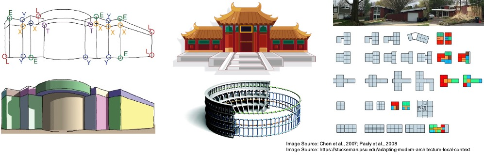

ONLINE - Monday, October 11, 2021 (AM)
[2021.10] Workshop schedule has been annouced. We look forward to seeing you online!
The perception of holistic structures, that is, orderly, regular, symmetric, or repetitive patterns and relationships in a scene, plays a critical role in human vision. When walking in a man-made environment, such as office buildings, a human can instantly identify parallel lines, rectangles, cuboids, rotational symmetries, repetitive patterns, and many other types of structure, and exploit them for accurate and robust 3D localization, orientation, and navigation. In computer vision, the use of such holistic structural elements has a long history in 3D modeling of physical environments. Due to their ability and potential in creating high-level, compact, and semantically rich scene representations, which are ideal for modern 3D vision tasks, these methods have drawn increased attention in the research community lately.
However, significantly more efforts are still required to enable real-world complex tasks, such as augmented reality, robot navigation and human-robot interaction, as they often demand human-level understanding of the environments. To fully harness the power of holistic structures as humans do, we are interested in the following questions:
As such, this workshop will bring together researchers working on exploring holistic structures for accurate, robust, and reliable 3D vision, as well as researchers who use structures in a variety of disciplines (e.g., robotics, VR/AR,interior design, and architectural engineering). We will examine the challenges, new directions, and the implication of industrial applications on holistic 3D modeling approaches.
Welcome remarks
Keynote talk: "Constraints in layout modeling" by Prof. Peter Wonka
Invited talk #1: "Structural 3D priors for holistic image understanding" by Prof. Angela Dai
Coffee Break
Invited talk #2: "Learning languages for visual programs" by Prof. Kevin Ellis
Invited talk #3: "Data-driven spatial reasoning and layout generation: attempts and challenges" by Prof. Chen Feng
Coffee Break
Invited talk #4: "Learning to infer and generate programs for 3D shapes and scenes" by Prof. Daniel Ritchie
Panel discussion with invited speakers